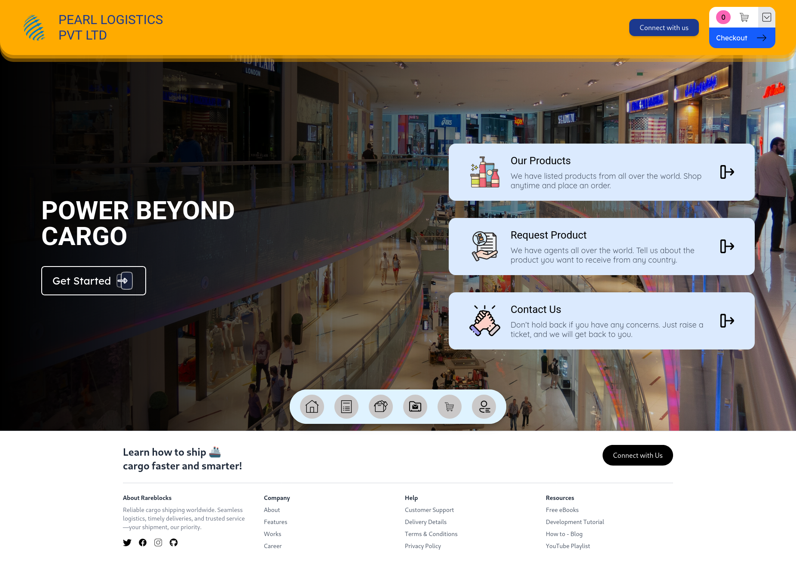

Object Oriented Analysis and Design Project
Pearl Logistics
Pearl Logistics is a full-stack logistics and commerce platform built to streamline product ordering, delivery operations, and business management through dedicated experiences for customers, administrators, and delivery agents.
Full-stack logistics and commerce platform
Pearl Logistics is a production-style logistics and commerce platform that brings together online shopping, order fulfillment, delivery management, customer support, and business administration into one unified system.
Developed as a collaborative university project, it demonstrates secure authentication, role-based access control, third-party integrations, and deployment across multiple frontend applications backed by a single Spring Boot API.

Problem addressed
Managing logistics, online sales, deliveries, and customer support through separate systems often leads to inefficient workflows and fragmented user experiences. Organizations need a centralized platform where customers, employees, and delivery personnel can interact seamlessly.
Pearl Logistics unifies these workflows by providing dedicated interfaces for customers, administrators, and delivery agents while sharing a common backend and database.
Team collaboration
I worked as part of a four-person development team to build the platform from frontend through deployment. We collaborated across backend, frontend, database design, testing, and deployment while continuously integrating our work throughout development.
My primary responsibilities focused on backend integrations, media management, email automation, and coordinating functionality between the React applications and Spring Boot backend.
Technology and architecture
The platform consists of three React + Vite applications serving customers, administrators, and delivery agents, all connected to a centralized Spring Boot backend with PostgreSQL persistence.
The backend uses Spring Security with JWT authentication and BCrypt password hashing while exposing RESTful APIs across modules for products, users, orders, deliveries, support tickets, reports, and administration.
Core functionality
The platform includes secure user authentication, product browsing, shopping cart management, order processing, custom product requests, support ticketing, employee management, report generation, and role-based operational workflows.
Cloudinary provides image storage for products and custom requests, while SMTP-powered email notifications keep users informed about ticket replies, order updates, account activity, and custom order confirmations.
My contributions
I implemented Cloudinary integration for image uploads and deletion within the custom order workflow and developed automated email notifications using JavaMailSender for ticket replies, sign-in alerts, custom order confirmations, and order status updates.
I also contributed across order management, ticket handling, administrative functionality, frontend-backend integration, deployment, and end-to-end system testing alongside the rest of the team.
Tech stack
Frontend: React 19, Vite, Tailwind CSS
Backend: Spring Boot, Spring Security, Spring Data JPA
Database: PostgreSQL
Integrations: Cloudinary, JavaMailSender (SMTP), JWT, BCrypt
Deployment: Vercel & Railway
Outcome
Pearl Logistics successfully delivered a complete multi-role logistics platform supporting the entire customer journey—from browsing products and placing orders to delivery operations, customer support, and business management.
Deployed using Vercel and Railway, the project demonstrates collaborative full-stack development, secure authentication, real-world third-party integrations, and an architecture designed to support future expansion into mobile applications, analytics, or microservices.